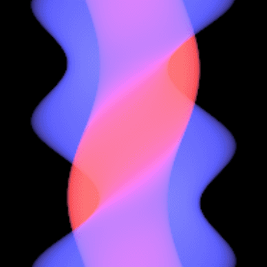

|
Mingyang Zhou I'm an Applieded Reseacher at Capital One AI Foundation in New York, where I work on Financial LLM Pre-training and Alignment. |

|
ResearchI'm interested in vision and language, specifically I have worked on vision and language pre-training, vision + multi-lingual, and vision and languagee model for chart understanding. |

|
CAT4D: Create Anything in 4D with Multi-View Video Diffusion Models
Rundi Wu, Ruiqi Gao, Ben Poole, Alex Trevithick, Changxi Zheng, Jonathan T. Barron, Aleksander Holynski arXiv, 2024 project page / arXiv An approach for turning a video into a 4D radiance field that can be rendered in real-time. When combined with a text-to-video model, this enables text-to-4D. |
|


|
EVER: Exact Volumetric Ellipsoid Rendering for Real-time View Synthesis
Alexander Mai, Peter Hedman, George Kopanas, Dor Verbin, David Futschik, Qiangeng Xu, Falko Kuester, Jonathan T. Barron, Yinda Zhang arXiv, 2024 project page / arXiv Raytracing constant-density ellipsoids yields more accurate and flexible radiance fields than splatting Gaussians, and still runs in real-time. |
|
|
CAT3D: Create Anything in 3D with Multi-View Diffusion Models
Ruiqi Gao*, Aleksander Holynski*, Philipp Henzler, Arthur Brussee, Ricardo Martin Brualla, Pratul P. Srinivasan, Jonathan T. Barron, Ben Poole* NeurIPS, 2024 (Oral Presentation) project page / arXiv A single model built around diffusion and NeRF that does text-to-3D, image-to-3D, and few-view reconstruction, trains in 1 minute, and renders at 60FPS in a browser. |
|
|
NeRF-Casting: Improved View-Dependent Appearance with Consistent Reflections
Dor Verbin, Pratul Srinivasan, Peter Hedman, Benjamin Attal, Ben Mildenhall, Richard Szeliski, Jonathan T. Barron SIGGRAPH Asia, 2024 project page / arXiv Carefully casting reflection rays lets us synthesize photorealistic specularities in real-world scenes. |
|
This website is bult using the souce coed from Jon Baron's Public Website |